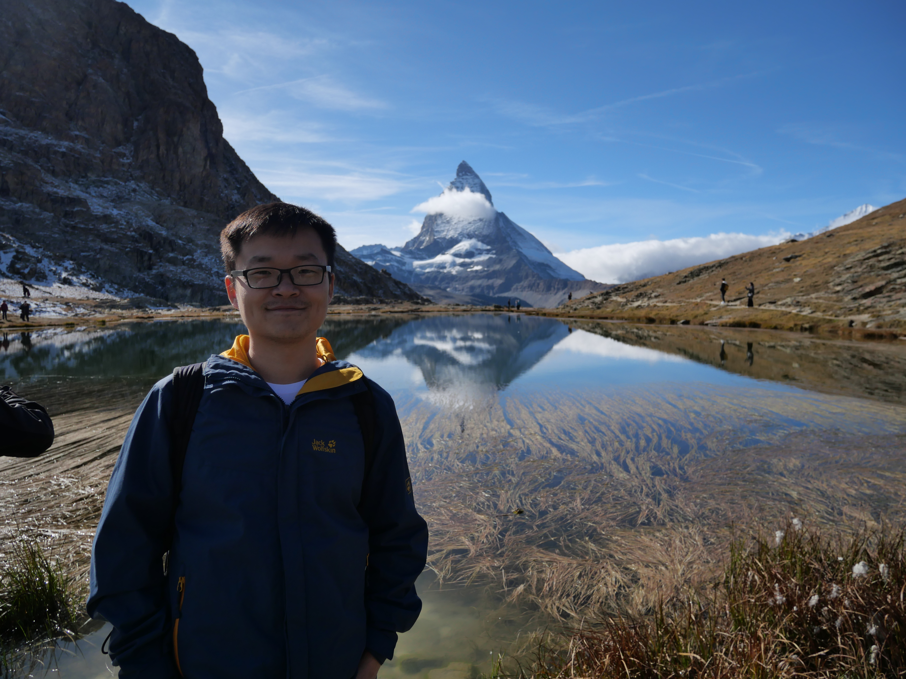
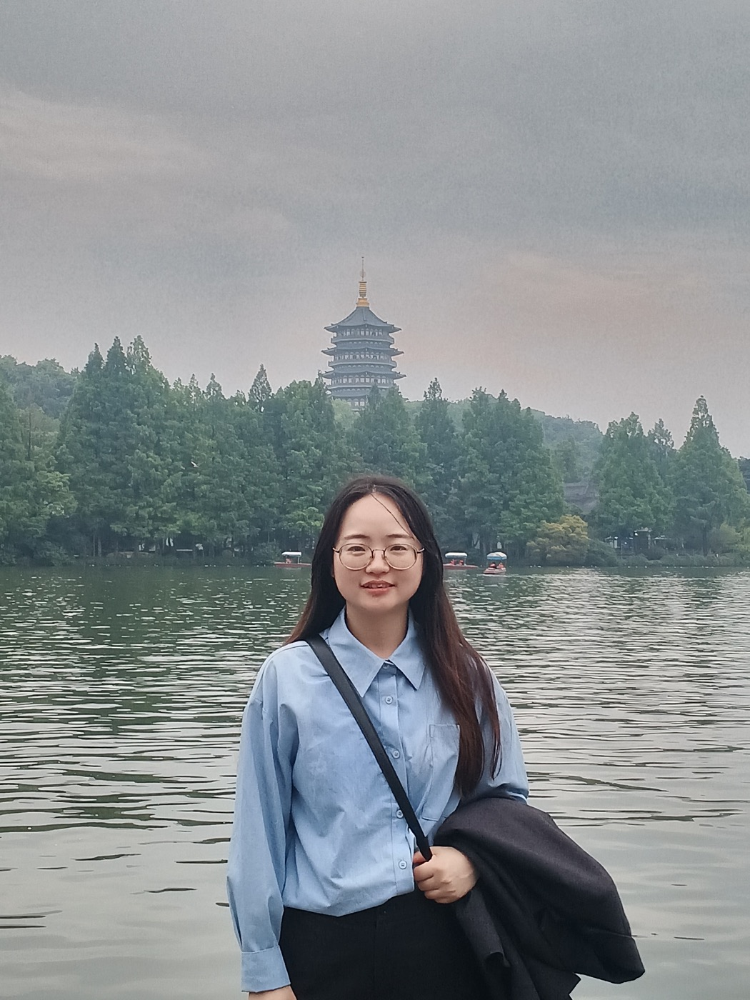
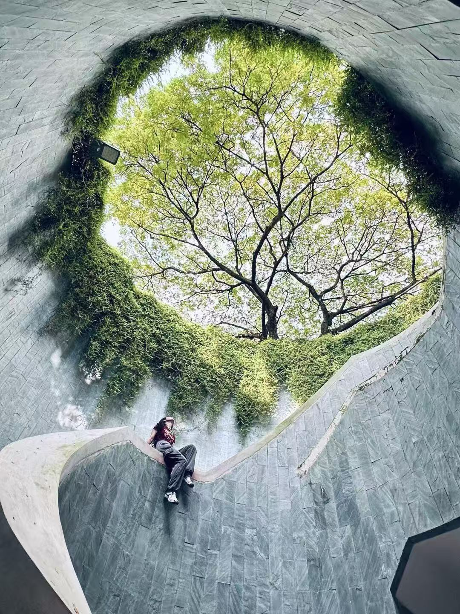
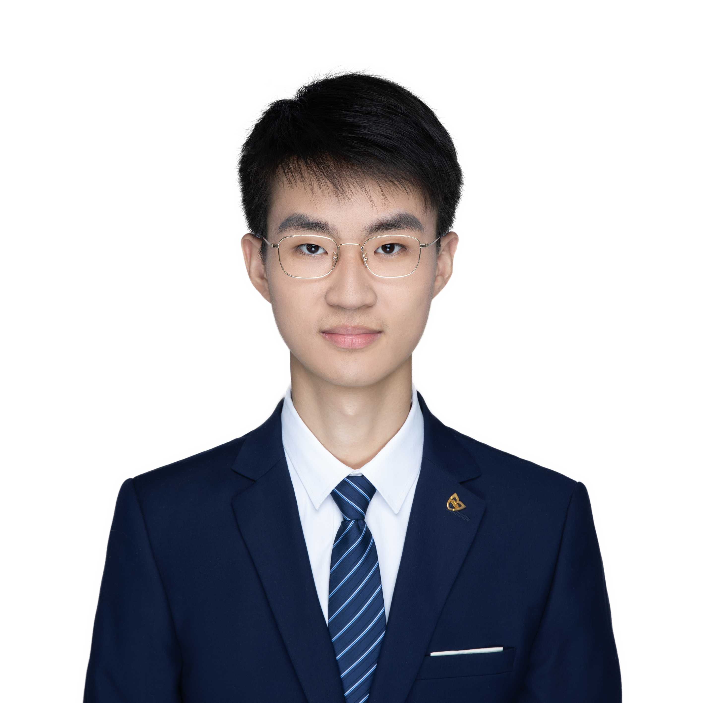
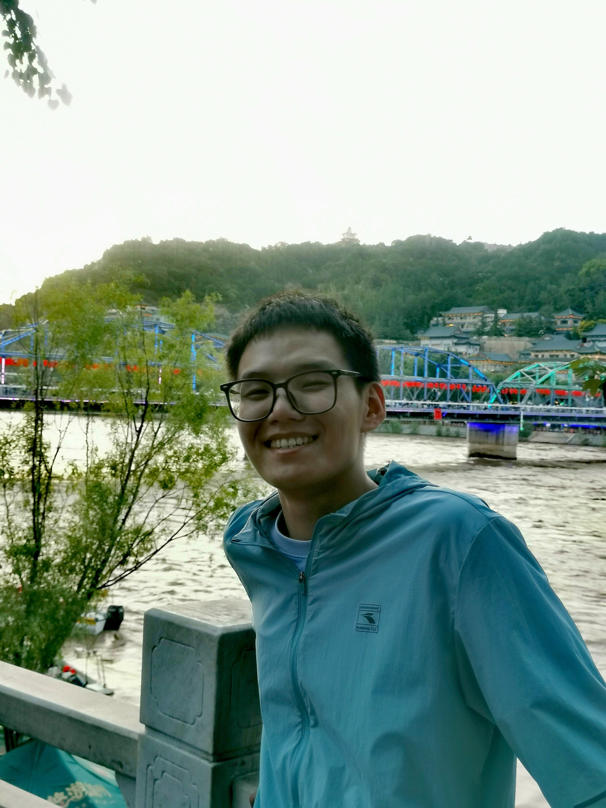
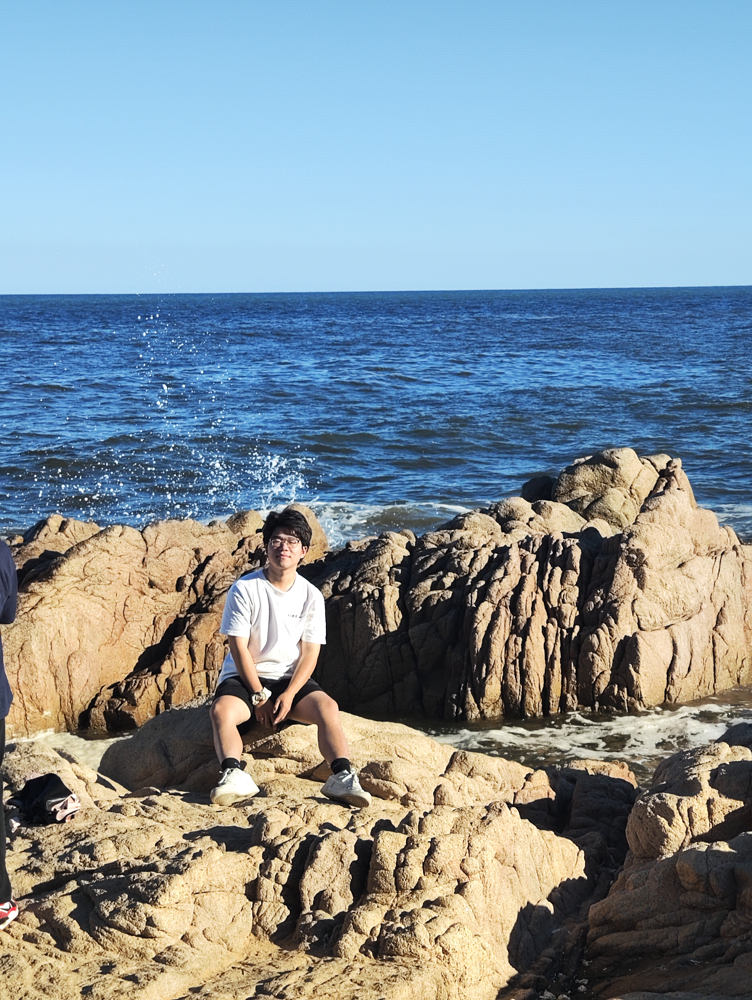
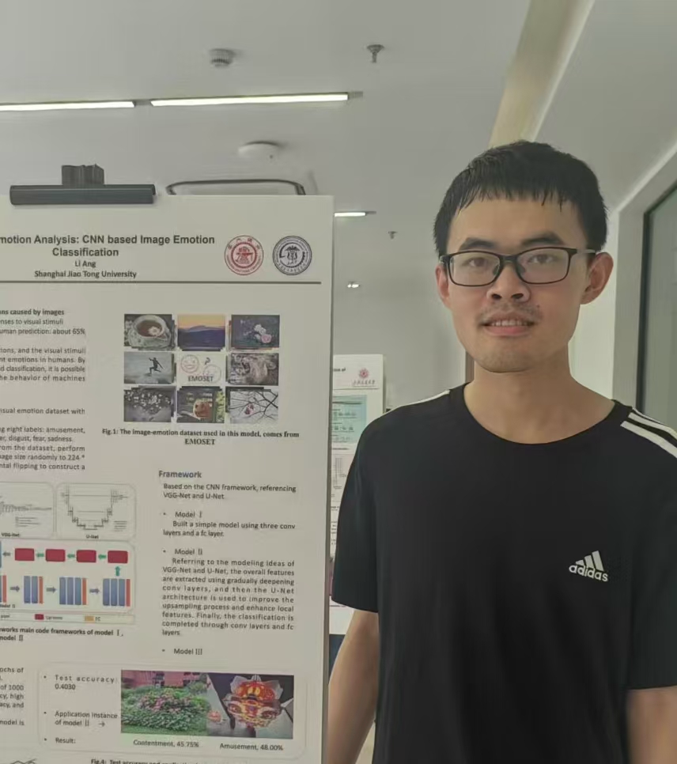
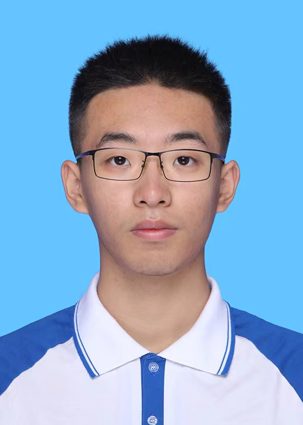

Assistant Professor, Peking University.
Chao Qi studied Biomedicine at Jilin University. He then joined the group of Da-Cheng Wang（王大成） at the Institute of Biophysics, Chinese Academy of Sciences, where he received training in macromolecular crystallography as a Master’s student.
He obtained his PhD in the group of Volodymyr Korkhov at ETH Zurich and the Paul Scherrer Institute, Switzerland. During his doctoral studies, Chao investigated key membrane proteins involved in signal transduction pathways.
In 2022, Chao joined the groups of Sjors Scheres and Michel Goedert at the MRC Laboratory of Molecular Biology (LMB), UK, as a postdoctoral fellow. There, he studied tau filaments associated with neurodegenerative diseases using cryo-electron microscopy (cryo-EM) helical reconstruction and in situ cryo-electron tomography (cryo-ET).
In 2025, Chao established his independent research group in the Department of Biophysics, School of Basic Medical Sciences at Peking University.
His laboratory focuses on molecular neuroscience, spanning mechanisms from physiology to pathology. By integrating biophysics, structural biology, and computational approaches, the lab aims to uncover the molecular mechanisms underlying neurodegenerative diseases and translate structural insights into therapeutic strategies.

Postdoctoral Fellow
Yan received her PhD from the Wuhan Institute of Virology, Chinese Academy of Sciences.
Research Assistant
Shuqing received her Bachelor's degree from Hebei University of Science and Technology.

PhD Student
Kexin studied life sciences at Wuhan University and obtained her Master's degree from Imperial College London. She joined the lab in 2024.

PhD Student
Zepeng is in the Peking University eight-year MD-PhD program and is interested in molecular mechanisms of neurodegenerative diseases.

PhD Student
Yi graduated from Huazhong University of Science and Technology and develops in situ cryo-electron tomography methods.

PhD Student
Zhidong is a PhD student in the Peking University eight-year MD-PhD program.

PhD Student
Ang graduated from Shanghai Jiao Tong University and conducts doctoral research in protein design.

Undergraduate Student
Xiangyu is a third-year student in the Peking University eight-year MD-PhD program.
Undergraduate Student
Yi is an undergraduate student at Minzu University of China.